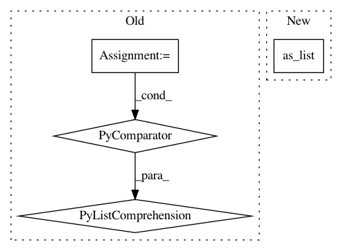

86a4393efb842ad65bd170c8beacd40119fd27be,pointcnn.py,PointCNN,__init__,#PointCNN#Any#Any#Any#Any#Any#Any#,53
Before Change
fts_xconv = xconv(pts, fts, qrs, tag, N, K, D, P, C, C_pts_fts, is_training, with_X_transformation,
depth_multiplier, sorting_method)
if links:
fts_list = [tf.slice(self.layer_fts[link], (0, 0, 0), (-1, P, -1), name=tag + "fts_list"+str(link))
for link in links if self.layer_fts[link] is not None]
fts_list.append(fts_xconv)
self.layer_fts.append(tf.concat(fts_list, axis=-1, name=tag + "fts_list_concat"))
else:
self.layer_fts.append(fts_xconv)
After Change
fts_from_link = self.layer_fts[link]
if fts_from_link is not None:
fts_slice = tf.slice(fts_from_link, (0, 0, 0), (-1, P, -1), name=tag + "fts_slice_"+str(-link))
C_forward = math.ceil(fts_slice.get_shape().as_list()[-1] / (-link))
fts_forward = pf.dense(fts_slice, C_forward, tag + "fts_forward_"+str(-link), is_training)
fts_list.append(fts_forward)
self.layer_fts.append(tf.concat(fts_list, axis=-1, name=tag + "fts_list_concat"))
In pattern: SUPERPATTERN
Frequency: 3
Non-data size: 4
Instances
Project Name: yangyanli/PointCNN
Commit Name: 86a4393efb842ad65bd170c8beacd40119fd27be
Time: 2018-04-10
Author: yangyan.lee@gmail.com
File Name: pointcnn.py
Class Name: PointCNN
Method Name: __init__
Project Name: keras-team/keras
Commit Name: aac5b539ac92fb6c91851e67441bbb9bd4f3cf59
Time: 2017-07-23
Author: francois.chollet@gmail.com
File Name: keras/backend/tensorflow_backend.py
Class Name:
Method Name: int_shape
Project Name: NifTK/NiftyNet
Commit Name: 135a56e0935fbb04811f8ce7b9f514f498212f71
Time: 2018-07-25
Author: wenqi.li@ucl.ac.uk
File Name: niftynet/layer/crf.py
Class Name:
Method Name: ftheta